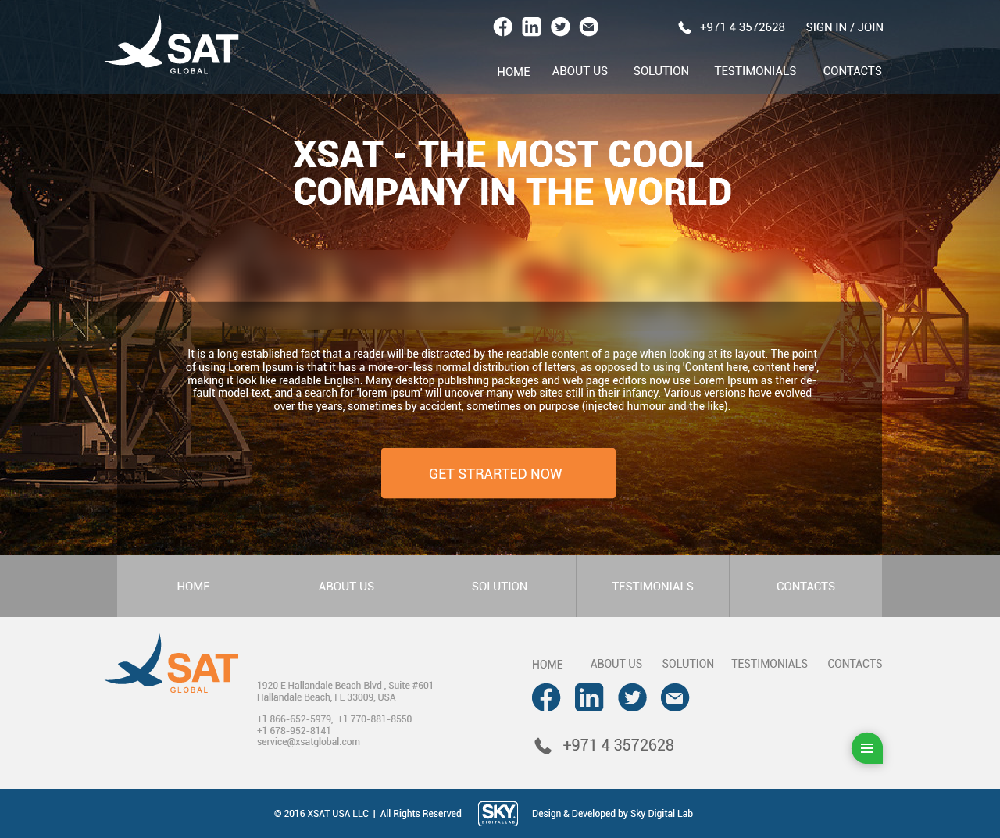

Наше портфоліо
ЗВ'ЯЗАТИСЯ З НАМИX-SAT PROJECT
Ми розробили корпоративний стиль, логотип та створили багатосторінковий сайт для міжнародної телекомунікаційної компанії «XSat Global». Унікальний дизайн відображає масштабність діяльності компанії. Сайт побудовано на WordPress.
